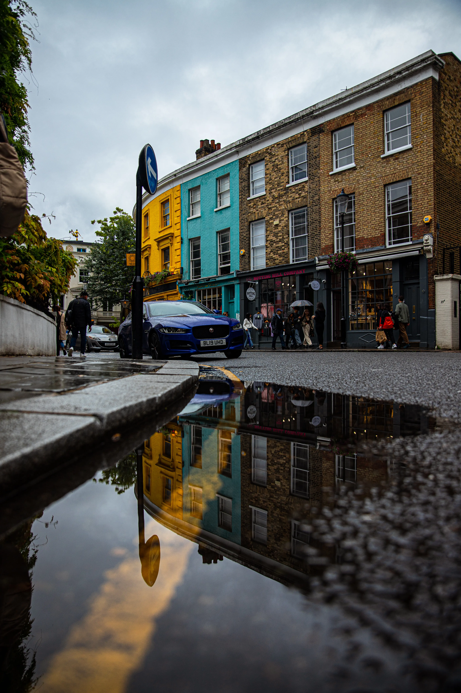
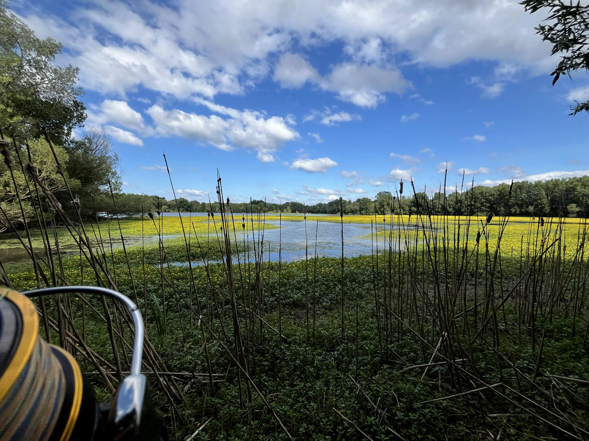
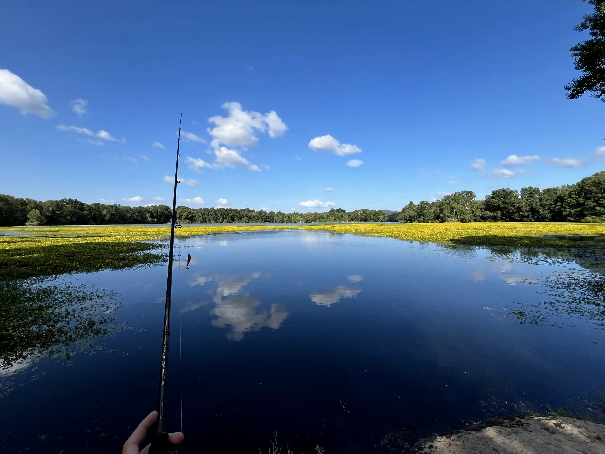
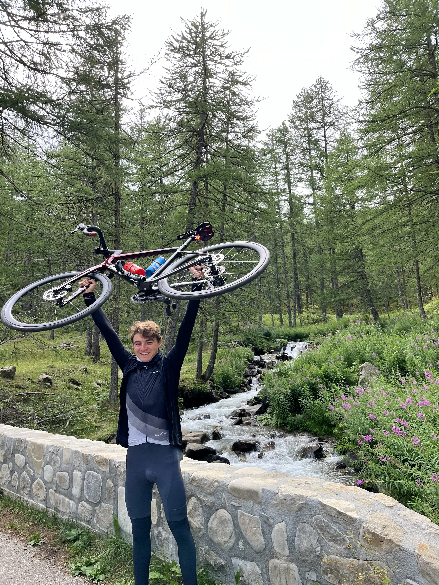
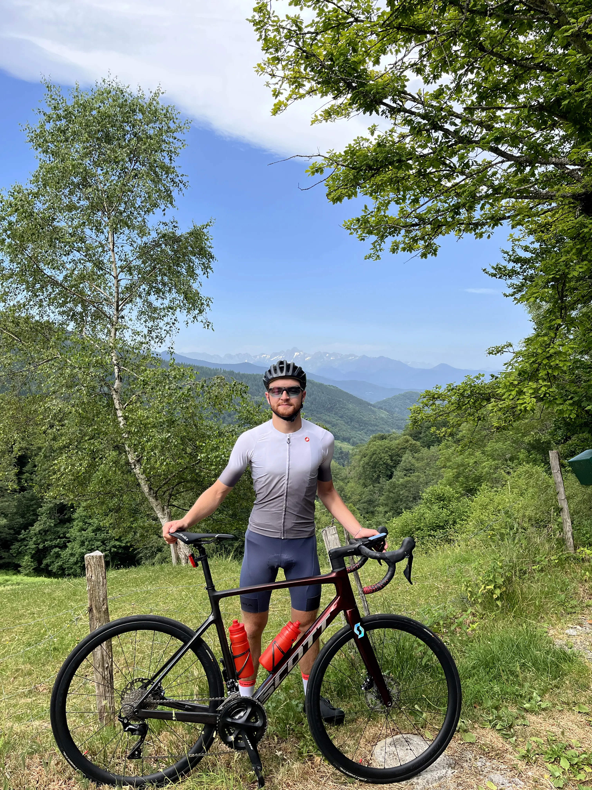

Je suis passionné par la photographie de voyage et d’événements sportifs et culturels. Cette passion me confère une perspective unique sur le monde qui m’entoure, me permettant de capturer des instants précieux et de transmettre des émotions authentiques.



Passionné de pêche depuis mon enfance, j’ai affiné mes compétences techniques et ma patience en tant que membre d’un club de pêche sportive. La compréhension de la faune et de la flore est au cœur de ma pratique, et je suis convaincu que ces qualités sont essentielles à la réussite.


Fort d’une expérience pluriannuelle dans diverses disciplines sportives, j’ai développé une endurance et une persévérance exceptionnelles. Le judo m’a inculqué rigueur et maîtrise de soi, essentielles en milieu professionnel. Le cyclisme a renforcé mon endurance et mon aptitude au dépassement de soi. Le tennis m’a apporté stratégie et concentration, précieuses pour la prise de décision. Six ans de natation m’ont donné une excellente condition physique et une grande résistance. Enfin, le Krav Maga a développé ma réactivité et ma gestion du stress. Cet ensemble témoigne de mon engagement, de ma polyvalence et de mon éthique personnelle, atouts pour une carrière réussie.

